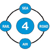

<ion-side-menus enable-menu-with-back-views="false">
    <ion-side-menu-content>
        <ion-nav-bar class="bar-stable">
            <ion-nav-back-button>
            </ion-nav-back-button>
            <ion-nav-buttons side="left">
                <button class="button button-icon button-clear ion-navicon" menu-toggle="left">
                </button>
            </ion-nav-buttons>
        </ion-nav-bar>
        <ion-nav-view name="menuContent"></ion-nav-view>
    </ion-side-menu-content>
    <ion-side-menu side="left">
        <ion-header-bar class="bar-stable">
            <h1 class="title">Menu</h1>
        </ion-header-bar>
        <ion-content>
            <ion-list>
                <!--<ion-item menu-close ng-click="login()">
          Login
        </ion-item> -->
                <ion-item menu-close href="#/app/home">
                         <strong>Home</strong>
                    </div>
                </ion-item>
                <ion-item menu-close href="#/app/about-us">
                    <strong>About Us</strong>
                </ion-item>
                <ion-item menu-close href="#/app/our-promise">
                     <strong>Our Promise</strong>
                </ion-item>
                <ion-item menu-close href="#/app/sea">
                      <strong>Sea</strong>
                </ion-item>
                  <ion-item menu-close href="#/app/air">
                      <strong>Air</strong>
                </ion-item>
                <ion-item menu-close href="#/app/road-rail">
                    <strong>Road & Rail</strong>
                </ion-item>
                <ion-item menu-close href="#/app/supply-chain">
                     <strong>Supply Chain</strong>
                </ion-item>
                <ion-item menu-close href="#/app/contact-us">
                    Contact Us
                </ion-item>
            </ion-list>
        </ion-content>
    </ion-side-menu>
</ion-side-menus>
